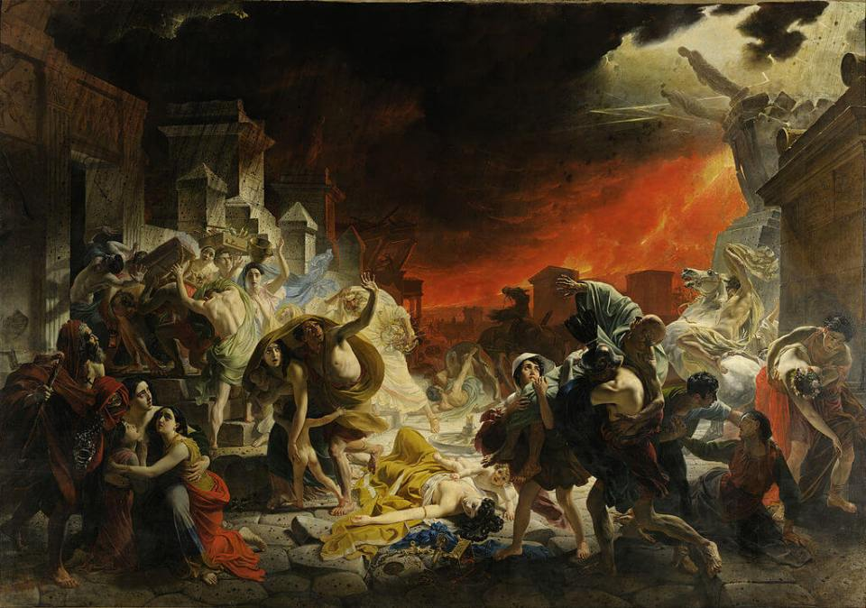

Брюллов Карл Павлович
Последний день Помпеи
4 года подготовки. Ещё 1 год непрерывной работы красками и кистями. Несколько
обмороков в мастерской. И вот результат – 30 квадратных метров, на которых изображены последние минуты жизни жителей
Помпеи (в 19 веке название города было женского рода).
Для Брюллова все было не зря. Думаю, в мире не было такого художника, чья картина, всего лишь одна картина произвела
бы такой фурор.
Люди толпами врывались на выставку, чтобы посмотреть шедевр. Брюллова буквально носили на руках. Его окрестили ожившим
Тицианом. А Николай I удостоил художника личной аудиенции.
Что же так поразило современников Брюллова? Да и сейчас не оставит зрителя равнодушным.
Мы видим очень трагичный момент. Через несколько минут все эти люди погибнут. Но нас это не отталкивает. Потому что нас
завораживает … Красота.
Красота людей. Красота разрушения. Красота катастрофы.
Посмотрите, насколько все гармонично. Красное расскаленное небо прекрасно сочетается с красным одеянием девушек справа
и слева. А как эффектно падают под ударом молнии две статуи. Я уж не говорю про атлетичную фигуру мужчины на
вздыбленном коне.
Картина с одной стороны о реальной катастрофе. Позы людей Брюллов срисовывал с погибших в Помпеях. Улица тоже настоящая,
ее до сих пор можно увидеть в очищенном от пепла городе.
Но красота персонажей делает произошедшее похожим на древний миф. Как будто красивые боги прогневались на красивых людей.
И нам не так печально.